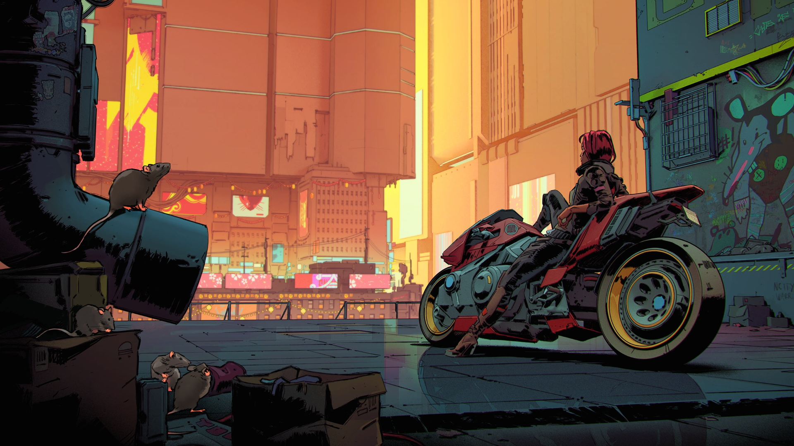
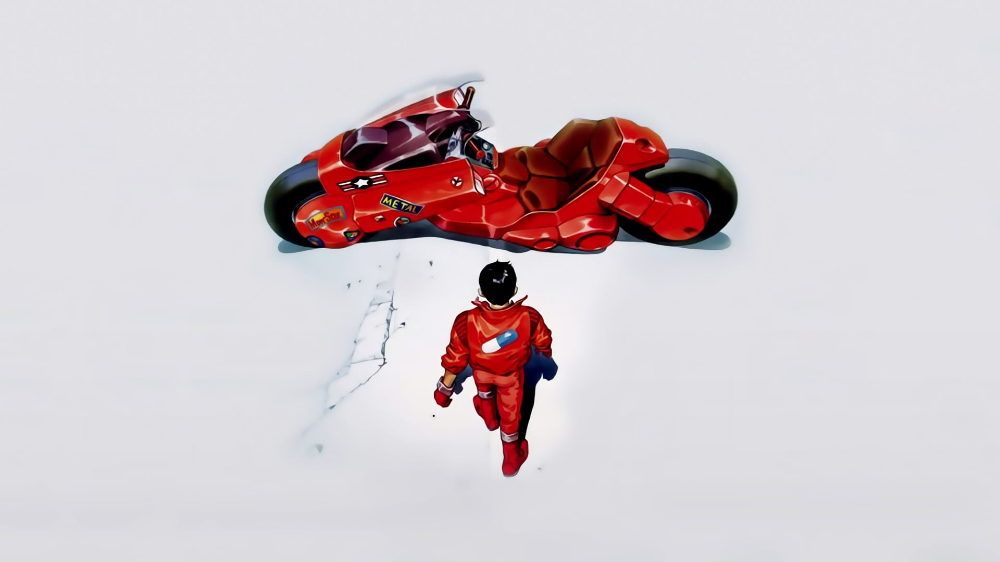
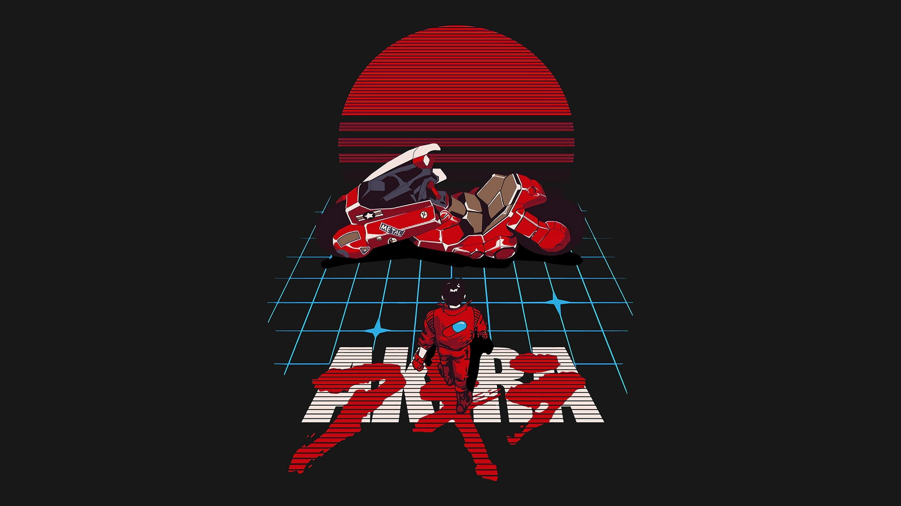

Qui sommes-nous ?
N'avez-vous jamais été perdu en arrivant sur une toute nouvelle carte Among Us ? Comment pouvons-nous y remédier ? Dans l'intention d'aider des centaines de personnes en détresse, cette plaforme: Sussy Tracker, est née en fin 2022, avec à ses commandes, 4 étudiants Lillois

Clement Tassin
À l'initiative de ce site web, il faudra qu'il attende l'arrivée de ses collègues et camarades pour que son projet prenne entièrement vie

Victor Vandevoir
Ami proche de Clément Tassin, il ne découvrira le projet qu'au cours d'une soirée et sera immédiatement tenté par l'aventure Sussy tracker

Irshad Mohamed Ali